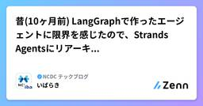

NCDC テックブログのフィード
https://zenn.dev/p/ncdc
NCDC株式会社( https://ncdc.co.jp/ )のテックブログです。 主にエンジニアチームのメンバーが投稿します。 募集中のエンジニアのポジションや、採用している技術スタックの紹介などはこちら( https://github.com/ncdcdev/recruitm
フィード

昔(10ヶ月前) LangGraphで作ったエージェントに限界を感じたので、Strands Agentsにリアーキテクチャしました
NCDC テックブログのフィード
はじめに皆さん、今から10ヶ月前の生成AIがどうだったか覚えていますか？MCPサーバーというものがエンジニアに広まったくらいのタイミングで、みんなが「MCPすげー」と言っていた時期ですね。その頃にいわゆるAIエージェントのアプリをLangGraphで作り始めたのですが、この領域の進化が早すぎて当時のアーキテクチャに限界を感じてリアーキテクチャしました。(1年足らずで限界を感じるって、進化早すぎ。。。) 主に改善したかったポイント限界を感じた点は以下になります。LangGraphで明示的にノードを定義していたが、Node数が10を超えていて保守や機能追加が辛くなっていた...
4日前

Figmaの生成AI×ベクター化機能×プラグインでちょっと楽してアイソメトリックイラストをつくろう
NCDC テックブログのフィード
UIデザインやスライド資料にイラストを追加したいときアイソメトリック（等角投影図）のイラストはとても重宝します。ただ、自分で描こうとすると角度の計算や調整が手間なうえに、素材を使おうとしてもぴったりなイラストがなかったりします。この記事はそんなアイソメトリックイラストをAIやらFigmaのベクター化を使って(比較的)楽してつくる方法を紹介する記事になります。 手順1:AIに希望のイラストを生成させるとりあえず希望のイラストをAIに生成させます。今回はGeminiのNano Banana 2を使用します。!Figma内のNano BananaではなくGeminiクライアントの...
8日前
スキルでPDFを処理しようとしたら、エージェントが勝手にファイルパスを書き換えるバグに悩まされた話
NCDC テックブログのフィード
言いたいことLLMが勝手にtmp/hoge.pdf(相対パス)を/tmp/hoge.pdf(絶対パス)に読み替えるので、File Not Foundエラーになるんだけど、助けて😵 はじめにAIを使った開発が当たり前になってきた昨今ですが、開発以外の業務ではまだまだ便利な要約ツール、調べ物ツール以上の活用が進んでいないのが現状です。そして日常業務への活用を考えた時に、避けて通れないのがOfficeファイルやPDFファイルの取り扱いです。そんな中で、AnthropicのCoworkはWord・Excel・PowerPoint・PDFといったオフィスファイルを直接扱える能力を持...
11日前
Claude CodeにビルトインのLSP機能があるの知ってますか？
NCDC テックブログのフィード
実はビルトインのLSP機能があるみなさんClaude Codeに純正のLSP機能があること知っていましたでしょうか。私は知りませんでした。ずっとSerenaMCPを使っていましたが、最近MCPじゃなくてもいいよねっていうツールはどんどん乗り換えていてSerenaに関してもMCPを介さないLSP機能があるなら乗り換えようとしていました。メモリ機能は他ツールで代替している＋シンボル単位編集の恩恵もそこまで感じていなかったため、個人的にはMCPのオーバーヘッドなしにLSPを直接使える方が嬉しいからです。というわけで、Bye Serena. 設定方法この記事で詳しく説明されてい...
14日前
【検証】AWS DevOpsAgentは「謎のタイムアウト」の原因を特定できるのか？人間とガチ対決させてみた
NCDC テックブログのフィード
はじめに2026年2月19日に開催されたLT会にて発表した「AWS DevOpsAgent vs 人間」の検証内容を記事として共有します。https://ncdc-dev.connpass.com/event/381709/本記事も問題、実況、解答の順で読み進められるので、ぜひ読者の皆さんも問題の原因を考えながら読んでいただけたらと思います。 AWS DevOpsAgentとはAWS DevOpsAgentはre:Invent 2025で発表された「Frontier Agents」の一つです （他にはKiro Autonomous Agent、AWS Security A...
16日前
ぼくんちのにっくす
NCDC テックブログのフィード
はじめにエンジニアっぽいことをしていると、仕事のためにいろいろツールを使いたくなるときがあります。例えば私の場合、ターミナルでテキスト編集、VM操作、AI実行をCLIでしたり、時には最低限webブラウザがGUIで必要だったりします。これらのツールを使うには基本的に何らかの方法でインストールが必要になります。ですがツールが多くなってくると、インストールの管理が大変になってきます。私は兼ねてより、my dotfiles(dotfilesについてはこちら)をgit管理しています。ここで、日常的に使用するツールは全てインストールできるようにソースを管理していました。しかし初回だ...
23日前
[暗号技術] 共通鍵・公開鍵そしてハイブリット
NCDC テックブログのフィード
最初に今回は普段の投稿とは一味違って、通信技術における暗号化に視点をおいて、基礎的な概念から、現代使用されている暗号技術に関してまとめてみようと思います。では、始めます。 なぜ暗号技術が必要なのかそもそも「なぜ？」を理解しておく必要があります。技術者であればパッとわかることかと思いますが、主に挙げられる点は以下です。通信内容が第三者に盗まれないようにする改竄されないようにする通信相手が本物であることを証明するです。仮に暗号技術なしで通信を行うとなると、盗聴・改竄し放題ですし、誰から送られてきたのか証明できず、通信における信頼性は皆無となるで...
23日前
証明書？OAuth？「なんとなく」で済ませてきた概念を整理してみた（セキュリティ編）
NCDC テックブログのフィード
この記事について前回のネットワーク編の記事。https://zenn.dev/ncdc/articles/fbcc6e0899739f今回はセキュリティ系の「なんとなく」になっていた概念について調べたことをまとめました。記事の目標は前回同様、「〇〇はこういうものでしょ？」とざっくり説明できる ようになること。全体の流れを掴むことです。 扱っているキーワードキーワードざっくり一言共通鍵暗号と公開鍵暗号暗号化の2つの方式。すべての土台ハッシュ化元に戻せない変換。改ざん検知やパスワード保護に使うSSL/TLS証明書サーバーの身分証明書...
23日前
DNS？ネームサーバー？「なんとなく」で済ませてきた概念を整理してみた（ネットワーク編）
NCDC テックブログのフィード
この記事について僕はこれまで、DNSもポート番号もファイアウォールも「なんとなく」で乗り切ってきました。「DNS浸透待ち」と言われたら、「そういうものか」で納得「そのポート使われてます」が出たら、適当に別のポートに変更動けばOK。深くは考えない。それで今まで困らなかった…… んですが 、先日こういうことがありました。Webアプリを本番公開するときに、なるべく安く最低限のWAFをつけたくてCloudflareを使おうとしたところ、ネームサーバー とか聞いたことはあるけどよくわからない単語が出てきて、そこからDNS、ポート番号、ファイアウォールまで芋づる式にわからないことが...
24日前
[Drizzle] マテビューにindexを貼る機能がない時の代替案
NCDC テックブログのフィード
最初にタイトルの通り、drizzleのスキーマ定義内でマテビューに対してindexを貼ろうとしたところ、drizzleではサポートされていないようで、やむをえず、他の方法で実現することとなりました。https://github.com/drizzle-team/drizzle-orm/issues/2976?utm_source=chatgpt.com上記が該当のissueですが、今回はその備忘録として記事化しておこうと思います。では、始めます。 どう貼ったのか早速結論から。migrate機能を用いる方法で作成しました。dbクライアントから手動でsqlを叩くこと...
1ヶ月前
角丸（border-radius）の歴史
NCDC テックブログのフィード
はじめにWeb上の角丸デザインは、現在ごく一般的なものとなっています。黎明期のWebシステムのUIは直角でしたが、CSSプロパティborder-radiusが一般化されたことで、コストが下がり手軽に取り入れられるようになりました。この記事では、Can I useの記載をもとに、角丸の歴史を記述します。 未定義期Can I useのデータを元にすると、最初にborder-radiusを導入したのはFirefox 2です。こちらが2006年10月のリリースとなるため、2006年9月以前が未定義期だといえます。border-radiusがないブラウザで角丸を表現しようとする...
1ヶ月前
「Excelみたいな表がよくて・・・」は数億円の請求と同じ意味？ 発注者が心得るべき「要望の解像度」の上げ方
NCDC テックブログのフィード
はじめに：トイレの吊り戸棚と「プロの矜持」記事を書こうと思ったきっかけは、私が家を建てるときのある体験です。間取りを決めて、家の内装を確認していた私は、トイレを見て違和感を覚えました。「あれ？ トイレの上に収納（吊り戸棚）がない？」私はこれまでの人生経験からてっきり、トイレには標準でトイレットペーパーなどを入れる棚がついているものだと思い込んでいました。しかし、図面には描かれておらず、結果として付いていませんでした。この時、私は「なぜプロなのに、棚がなくて不便だと察して提案してくれなかったんだ」と少し残念に思いました。これをシステム開発の現場に置き換えてみます。私は、シ...
1ヶ月前
Aurora Serverless v2のメジャーアップグレードが失敗したとき
NCDC テックブログのフィード
はじめにある日Aurora Serverless v2 postgresを15から17へのメジャーアップグレードを試みたところ、下記のようなメッセージで失敗してしまいました。調べてもあまり情報が出てこなかったので、こちらに備忘録として残しておきます。command: "/rdsdbbin/aurora-15.12.15.12.4.43259.0/bin/pg_ctl" -w -l "/rdsdbdata/db/pg_upgrade_output.d/20260109T014751.492/log/pg_upgrade_server.log" -D "/rdsdbdata/db_...
1ヶ月前
[SQL] Distinct・Distinct On・Group Byの違いについて整理したい
NCDC テックブログのフィード
最初に私は基本バックエンドなので普段からSQLに触れています。そんな中、お恥ずかしながらタイトルにあるコマンドの違いを明確に理解できていないことに気がつきました。その時々で調べて、納得し、適切なコマンドを選んで実装はしているつもりですが、聞かれた時にパッと答えられるかと言われたらそうではありません。もしかしたら皆さんも経験あるかも。。ということで今回は、これらの違いについて記事として書き留めておこうと思います。では、始めます。 そもそもなぜいつも忘れるのか理由は簡単で、似た概念かつクエリが単純であれば結果が同じになることが多いからです。これにつきます。つまり、...
1ヶ月前
EventBridge イベントバスの仕組み
NCDC テックブログのフィード
はじめにEventBridgeは、AWSの各サービスが生成するイベントを受け取り、他のサービスなどへ配信できるサービスです。ここではEventBridgeにおけるイベントバスの仕組みと用語について記述します。EventBridgeを設定するための手順については含んでいませんので、ご注意ください。 イベントイベントバス方式の起点となるのが、イベントです。イベントは、AWSサービス（イベントソース）における状態変化の通知です。JSON形式で取り扱われます。例えば、EC2インスタンスが実行中状態になったとき、EC2はイベントを発行します。EventBridgeはイベントを...
1ヶ月前
Agent Skillsを実行するMCPサーバーを作ってみた
NCDC テックブログのフィード
Agent Skillsを実行するMCPサーバーを作ってみました。https://github.com/k-ibaraki/agent-skills-mcp-server 作った経緯年始にこの記事を書きました。https://zenn.dev/ncdc/articles/206fbad44d1dbaその後、やっぱり開発環境や個人のローカル環境以外でも、そしてエンジニア以外でも、気軽にAgent Skillsを使えるようにしたいなぁと思いました。そうなると、ガバナンスを効かせる為に本体のAgentから分離した環境で動かす必要があり、かつエージェントから標準的な方法で気軽に使え...
1ヶ月前
非IT者に伝わるIT用語言い換え辞典
NCDC テックブログのフィード
IT業界で生きていると、システム用語使いたい(使いがち)ですよね。しかしながら、受託開発でお客様を相手にすると、必ず説明を求められる場面があります。そんなときに使える言い換え辞典を作りたいなと思い、作りはじめました。普段業務をしていて伝わりづらいなと思う用語を中心に、随時更新をしていきたいと考えています。 1. 「画面がおかしい・動かない」ときの用語問い合わせ対応やテストの時によく使う言葉です。専門用語お客さんへの言い換え（馴染みのある言葉）解説のニュアンス備考キャッシュ一時ファイル / 履歴データ「古いデータがパソコン（ブラウザ）に残っているせい...
1ヶ月前
システム開発の発注者なら知っておくべき問い「その技術的な決定は、UX/UIにどう影響しますか？」
NCDC テックブログのフィード
システム開発において、NCDCがお客様とシステム開発を進めていく上で、よく気にしていることが、「インフラ（技術的な裏側の仕組み）の決定は、UI/UX（画面の使い勝手）に直結する」 ということです。しかし、技術的な専門用語が飛び交う開発現場において、この因果関係を直感的に理解するのは難しいものです。そこで今回は、私がプライベートの「注文住宅づくり」で遭遇したある事件を例に、 「なぜ発注者が技術的な話をしっかり聞くべきなのか」 をお話ししたいと思います。 注文住宅で起きた「青いフタ」事件家づくりを始めると、Instagramなどで理想の外観を調べたり、デザインにこだわったりしますよ...
1ヶ月前
日本企業にありがちな「アジャイルの誤解」を解き、現場に定着させるための実践ガイド
NCDC テックブログのフィード
近年、DX推進の文脈でアジャイル開発を採用する企業が増えています。しかし、現場では「アジャイル＝計画なしの場当たり的な開発」といった誤解が依然として根強く、形骸化した「野良アジャイル」に苦しむケースも少なくありません。本記事では、アジャイルに対するよくある誤解を整理し、日本企業が適切に導入するための具体的なアプローチと評価指標について解説します。 1. アジャイル開発における「3つの大きな誤解」 ① 「アジャイル＝計画なし」という誤解アジャイルは詳細な仕様書を最初に固めないため、「行き当たりばったり」に見えることがあります。実態： ウォーターフォールが「計画を死守する...
1ヶ月前
[PostgreSQL] pg_cronという拡張機能を使ってみた
NCDC テックブログのフィード
最初にマテビューのリフレッシュで当初バッチを想定していたところ、pg_cronという拡張機能の存在を知り、初めて導入してみました。今回はpg_cronの概要と、設定手順を備忘録として記事に残していきたいと思います。では、始めます。 pg_cronとは一言で表すと、「PostgreSQL自身が、定期実行してくれる仕組み」のことです。名前の通りですね。普段、定期処理というとLinuxのcronやバッチを使用した実行を思い浮かべがちですが、pg_cronを使うと「データベース自身がスケジューラになる」のが大きな特徴です。https://docs.aws.amazon....
1ヶ月前